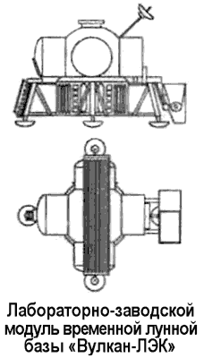
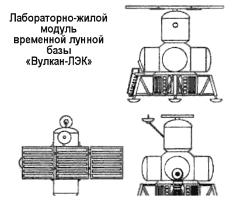

Лунная база по проекту НПО «Энергия»
О необходимости планомерного освоения Луны много писал и другой пионер отечественной космонавтики — Валентин Глушко.
В его теоретических работах 70-х годов выдвигалась концепция многоцелевой лунной базы, основанная на полученных к тому времени данных о природе Луны и современных технических возможностях ее освоения и использования. Основные аргументы в пользу строительства обитаемой лунной базы сводились к следующему. Такая база удобна для ведения непрерывного глобального контроля всей поверхности Земли и окружающего ее космического пространства. С нее возможно проведение уникальных астрофизических экспериментов. Малая сила тяжести и тем самым умеренные затраты энергии для отлета с Луны, в сочетании с ее близостью к Земле, создают благоприятные возможности вовлечения лунных ресурсов в сферу космического производства, которое может быть организовано на геоцентрических и селеноцентрических орбитах. При этом отмечалось, что первичную обработку лунного сырья целесообразно производить на промышленных установках, расположенных на Луне и использующих дармовую солнечную энергию.
Лунные установки по производству кислорода из местных материалов могли бы обеспечить окислителем местные нужды и заправку космических транспортных грузовых и пилотируемых кораблей местного и дальнего следования как на Луне, так и на селеноцентрической орбите.
Валентин Глушко всячески подчеркивал, что местные ресурсы, в качестве которых можно рассматривать лунные породы, при надлежащей обработке могут обеспечить производство ракетного топлива достаточной эффективности для выполнения стартов с лунной поверхности.
Исследования Луны автоматическими аппаратами были первым шагом в ее изучении. Следующим этапом должны быть пилотируемые экспедиции, создающие на Луне сначала временные базы, затем долговременные и, наконец, постоянно действующие.
Свой первый проект лунной базы Глушко предложил еще в рамках программы «Вулкан-ЛЭК» (ее мы обсуждали в главе 10).
Благодаря огромному запасу грузоподъемности, который могла бы обеспечить разрабатываемая в НПО «Энергия» ракетаноситель «Вулкан», на Луну помимо экспедиционного корабля «ЛЭК» планировалось доставить два специализированных модуля: лабораторно-жилой и лабораторно-заводской.
Лабораторно-жилой модуль состоял из цилиндрических камер, содержащих тамбур для выхода на поверхность, камбуз с туалетом, хранилище и командный центр.
В круглом помещении, соединяющем цилиндры, располагалась каюткомпания, в верхнем цилиндре — лаборатория и каюты. Габариты лабораторно-жилого модуля: полная длина — 9,7 метра, максимальный диаметр — 11,3 метра, обитаемый объем — 160 м3, полная масса — 21,5 тонны, полезный груз — 6,3 тонны. В этом модуле, посаженном на Луне в автоматическом режиме, экипаж из трех человек мог провести до одного года.


Лабораторно-заводской модуль состоял из таких же типовых цилиндров, но оборудованных под задачи научных исследований и производства необходимых компонент экспедиции. В нижних цилиндрах размещались: фабрика по производству кислорода с ковшом для забора и разрыхления лунного грунта, биологическая, химическая и физическая лаборатории.
В верхнем цилиндре планировалось устроить оранжерею. Габариты лабораторно-заводского модуля: полная длина — 4,5 метра, максимальный диаметр — 8 метров обитаемый объем — 100 м3, полная масса — 15,5 тонны, полезный груз — 6,07 тонны. Для обслуживания лабораторно-заводского модуля достаточно одного оператора, который будет постоянно жить в лабораторно-жилом модуле.
Теоретически весь комплект модулей временной лунной базы, включающий лунный экспедиционный корабль «ЛЭК», лабораторно-жилой, лабораторно-заводской модули, а также тяжелый луноход с обитаемым блоком, на Луну могли бы доставить всего лишь две ракеты «Вулкан». Однако эти идеи, как и работы по созданию сверхтяжелого носителя «Вулкан», не нашли официальной поддержки. По сути проект временной лунной базы «Вулкан-ЛЭК» создавался по личной инициативе Валентина Глушко, так и не став содержанием официальной космической политики.